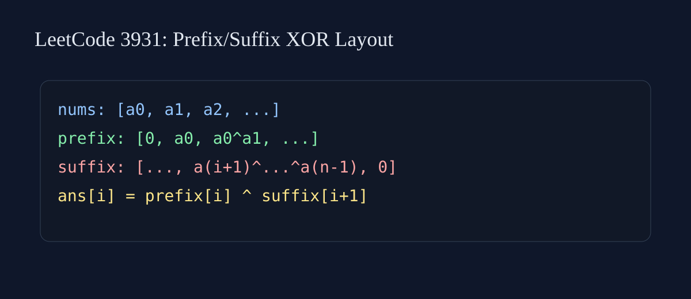

LeetCode 3931: Find X Value of Array XI (Bit Manipulation / Prefix-Suffix)
Source: https://leetcode.com/problems/find-x-value-of-array-xi/

English
class Solution{public int[] solve(int[] nums){int n=nums.length;int[] pre=new int[n+1],suf=new int[n+1],ans=new int[n];for(int i=0;i=0;i--)suf[i]=suf[i+1]^nums[i];for(int i=0;i 中文
class Solution{public int[] solve(int[] nums){int n=nums.length;int[] pre=new int[n+1],suf=new int[n+1],ans=new int[n];for(int i=0;i=0;i--)suf[i]=suf[i+1]^nums[i];for(int i=0;i